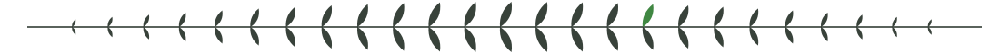
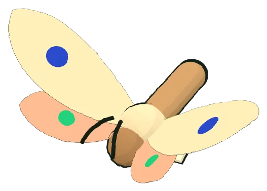
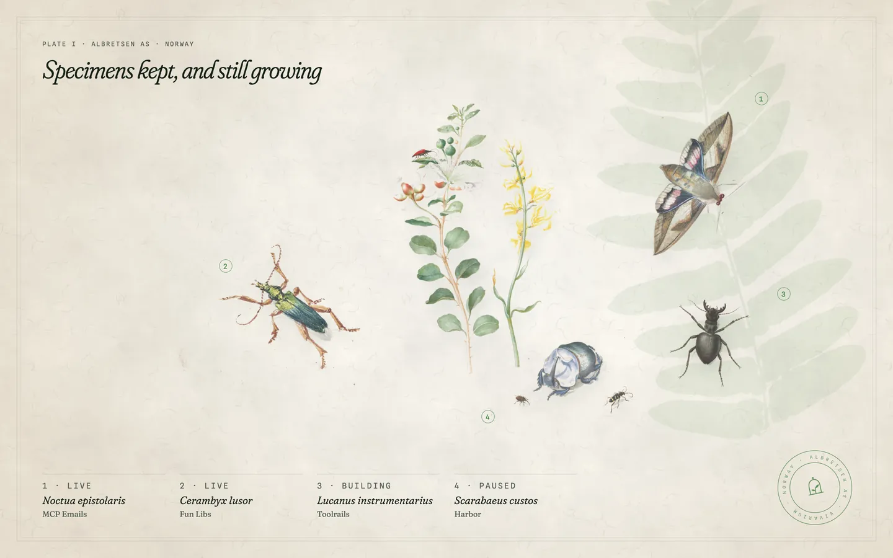
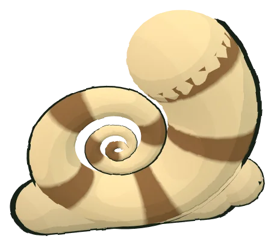
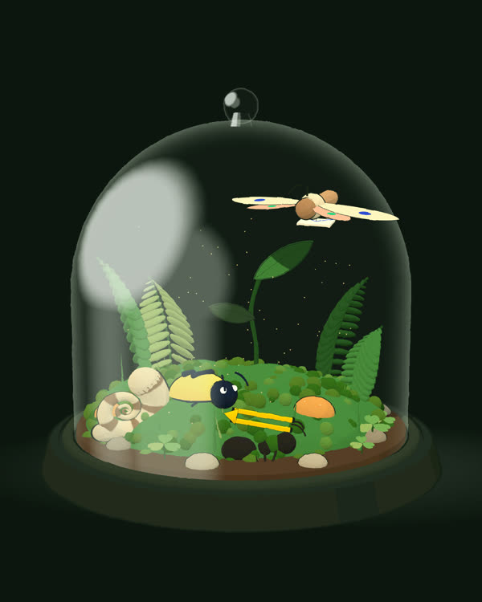

Vivarium No. 1 · Norway · On Google Play since 2016
Small software, kept alive under glass.
Asgeir Albretsen runs Albretsen AS, a small technology company that builds whatever earns its keep: apps, SaaS and infrastructure for AI agents. Four creatures live in the case. Seven are pressed and filed.
Feeding instructions · for your agent
claude mcp add albretsen https://albretsen.no/mcp
Field log · live
What the creatures did in the last few minutes, as noted by the keeper.


01 · Specimens
Four under glass, catalogued.
Each product is pinned beside the old drawing it most resembles, with its own logo on the tag. Two are live, one is still growing, one is asleep.


02 · Herbarium
Seven, pressed.
Nothing is thrown away. Retired products are pressed flat and filed with a date. Turn a sheet to read its label.

After hours, the jar keeps going.
The same terrarium, rendered live: every pebble, fern and creature is a WebGL primitive with an ink outline. No models were downloaded to make it.
